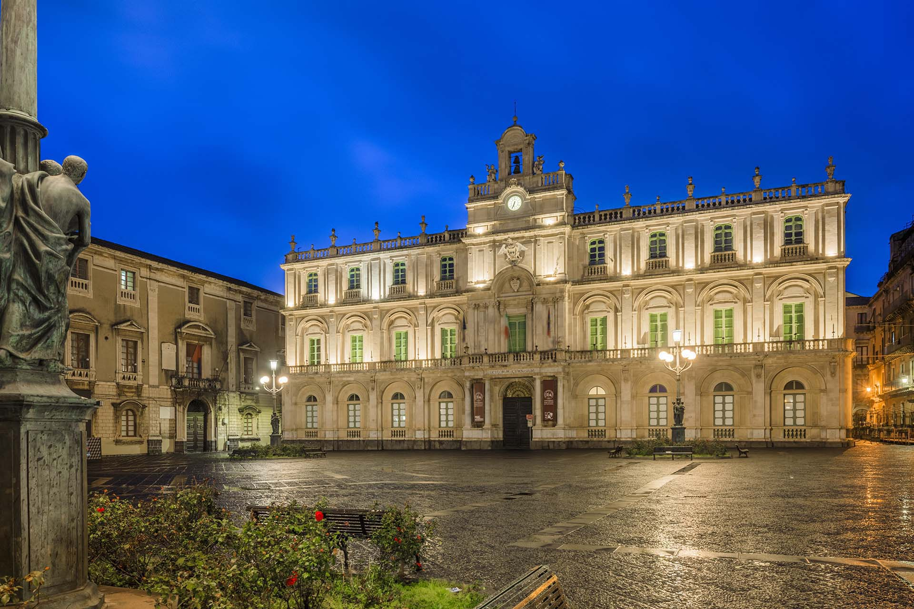

Catania — L'eleganza geometrica del barocco in pietra lavica.
Situata lungo la storica Via Etnea, questa piazza è uno degli spazi urbani più armoniosi e luminosi di Catania, ridefinita interamente dopo il grande sisma del 1693.

Sede del Siculorum Gymnasium fondato nel 1434, il palazzo presenta un magnifico cortile interno a doppio loggiato e una facciata mossa progettata da grandi architetti del barocco catanese.
Realizzati nel 1957 dallo scultore Mimì Maria Lazzaro, i quattro spettacolari lampioni artistici in bronzo decorano la piazza accogliendo e narrando plasticamente le antiche leggende catanesi.
Sui lampioni sono scolpite le storie di Colapesce, dei fratelli pii Anapia e Anfinomo che salvarono i genitori dall'Etna, del paladino Gammazita e del valoroso giovane idraulico Uzeta.
Posto esattamente di fronte all'Università, questo palazzo nobiliare disegnato da Giovan Battista Vaccarini arricchisce la piazza con la sua imponente architettura e i suoi dettagli decorativi bicolore.